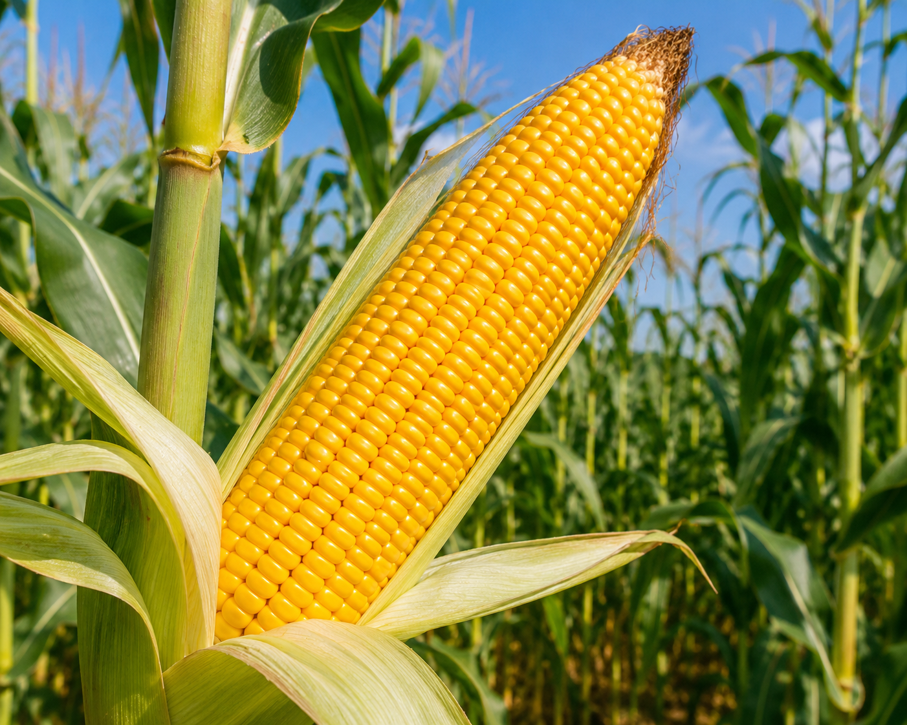

Maize (scientifically known as Zea mays), commonly known as corn, is one of the most widely cultivated cereal crops in the world and plays a vital role in global agriculture and food security. It belongs to the grass family (Poaceae) and thrives in warm climatic conditions with adequate sunlight, moderate rainfall, and fertile soil. The crop typically grows between 1.5 to 3 meters in height and produces large cobs containing rows of nutrient-rich kernels. Depending on the variety and environmental conditions, maize generally matures within 90 to 120 days.
Major maize-producing countries include India, the United States, China, Brazil, and Argentina. The crop is commonly grown in well-drained loamy soil, which provides suitable moisture retention and proper aeration for healthy root and plant development.
Maize is considered an important food, fodder, and industrial crop due to its wide range of applications. The kernels are used in the preparation of food products such as corn flour, cornflakes, popcorn, and starch, while the plant residue is used as animal feed. Maize cultivation involves land preparation, seed sowing, irrigation, nutrient management, pest control, and timely harvesting of mature cobs.
